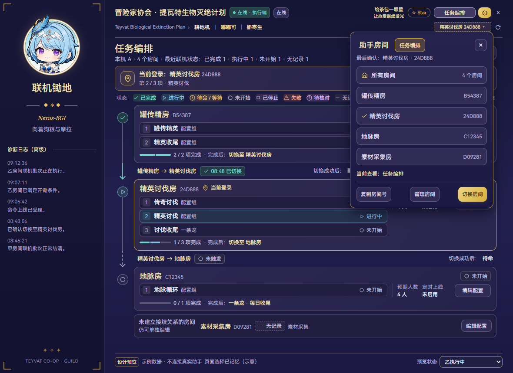
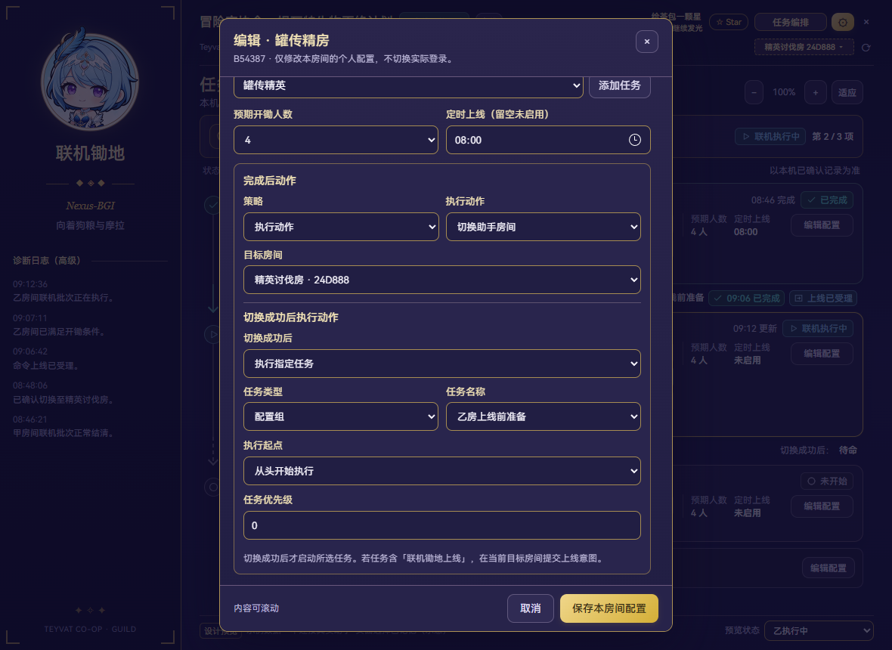

助手房间入口
标题右边新增按钮，不改变原顶栏宽度、复制、管理和切换入口。

已改选 A 纵向接力图；新版删除重复标题、适应与缩放工具条，直接拖动及鼠标滚轮浏览。以下状态均为演示数据。
试用：按住画布非操作区域上下拖动或使用鼠标滚轮浏览房间；点击房间标签打开下拉窗口，选择「任务编排」或房间视图；点击编辑配置，切换待命和指定任务；底部「预览状态」可以切换执行、等待、失败、未知等状态。
标题右边新增按钮，不改变原顶栏宽度、复制、管理和切换入口。

目标房间、待命或指定任务分组；复用配置组、一条龙、计划表、起点和优先级选择。

所有原型只用于选择与审核布局。实际 WPF 显示、高 DPI 与任务状态须在实现后验证。